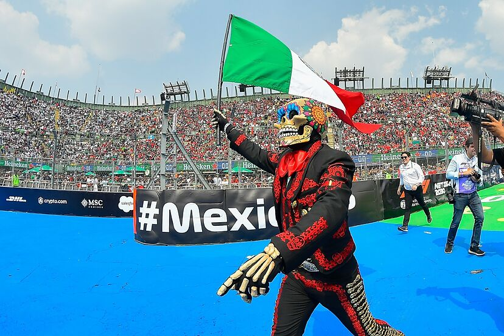
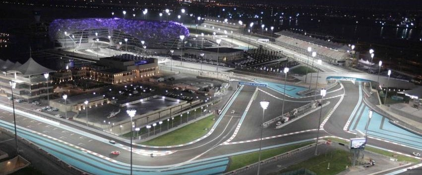
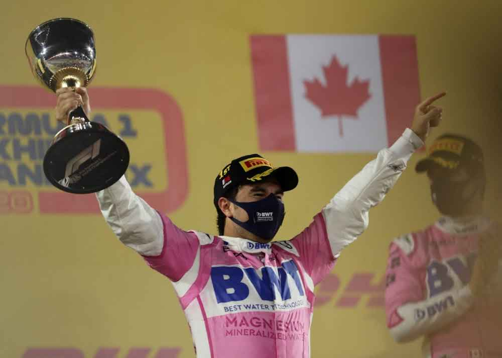

Checo Pérez queda fuera del GP de México en la primera vuelta

A lo largo de este año, en el marco de la temporada 2023 de la F1, hemos experimentado un sinfín de emociones junto a los pilotos en las pistas. El Gran Premio de México no fue una excepción en este sentido. Caracterizado por la dificultad que impone la altitud sobre el nivel del mar y las desafiantes curvas, este evento nos brinda una experiencia única.
Este año, ocurrió algo que nadie esperaba y, mucho menos, deseaba: el piloto mexicano de F1, Sergio "Checo" Pérez, quien compite para la escudería Red Bull Racing, sufrió un accidente que lo dejó fuera del Gran Premio en la primera vuelta.
El piloto había iniciado la carrera de manera excepcional, partiendo desde la quinta posición y, durante el comienzo del Gran Premio, se encontraba en línea con los líderes de la carrera, Charles Leclerc y Max Verstappen. Sin embargo, al llegar a la curva número uno, ocurrió algo inesperado. Leclerc no tenía espacio para maniobrar y, con Checo a su lado, se produjo un accidente que sacó a Checo de la competencia.
Definitivamente, fue un fin de semana de mala suerte para Checo Pérez en el Gran Premio de casa.
Max Verstappen Corona una Temporada Épica con su Primer Título de Campeón Mundial de Fórmula 1 en 2021

En el transcurso de la temporada de Fórmula 1 de 2021, Max Verstappen forjó un camino memorable hacia la consagración, culminando en su primer título como Campeón Mundial. Compitiendo para el equipo Red Bull Racing, Verstappen se destacó en una serie de momentos cruciales que definieron su trayectoria hacia la victoria.
El Gran Premio de Abu Dhabi, celebrado en el circuito de Yas Marina, se erigió como el escenario final de una batalla intensa entre Verstappen y su principal rival, Lewis Hamilton. La última carrera del calendario se convirtió en un hito histórico cuando Verstappen logró superar a Hamilton en un desenlace lleno de emoción y estrategia. La gestión hábil del equipo Red Bull Racing y la ejecución precisa de Verstappen en la pista le aseguraron la victoria, consolidando su posición como el nuevo campeón mundial.
A lo largo de la temporada, Verstappen demostró una consistencia impresionante y un rendimiento excepcional. Desde su impresionante victoria en el Gran Premio de Mónaco hasta su habilidad para sortear desafíos en circuitos exigentes, cada carrera fue un testimonio de su destreza y determinación.
La competencia directa con Hamilton, siete veces campeón del mundo, añadió una capa adicional de drama a la temporada. La rivalidad entre los dos pilotos se intensificó, alcanzando su punto culminante en el circuito de Yas Marina, donde Verstappen se erigió como el nuevo titular del prestigioso título de la Fórmula 1.
La temporada 2021 será recordada como un capítulo épico en la carrera de Max Verstappen, marcando el inicio de una nueva era para el piloto neerlandés y consolidando su lugar en la historia del automovilismo como un campeón mundial.
Triunfo Histórico de Checo Pérez en el GP de Sakhir 2020

En una jornada que quedará grabada en la memoria de los aficionados a la Fórmula 1, el Gran Premio de Sakhir de 2020 se convirtió en el escenario de un triunfo extraordinario para el piloto mexicano, Sergio "Checo" Pérez. Este evento marcó un hito significativo en la carrera de Pérez al asegurar su primer triunfo en la máxima categoría del automovilismo.
Corriendo para el equipo Racing Point, Checo Pérez protagonizó una actuación magistral que lo llevó desde la parte trasera de la parrilla hasta lo más alto del podio. Este desempeño destacado se vio impulsado por la oportunidad única de ocupar el asiento del piloto titular de Mercedes, Lewis Hamilton, quien se encontraba ausente debido al diagnóstico positivo de COVID-19.
La carrera en el circuito de Sakhir estuvo marcada por la intensidad y la imprevisibilidad, con Checo Pérez demostrando su habilidad para gestionar neumáticos y estrategias en un escenario en el que muchos contendientes se vieron afectados por diversos incidentes y pit stops. La ejecución precisa de Pérez durante todo el Gran Premio lo catapultó hacia la victoria, convirtiéndolo en el primer mexicano en ganar una carrera de Fórmula 1 desde Pedro Rodríguez en 1970.
Este triunfo no solo representó un logro personal para Checo Pérez, sino también una valiosa contribución al equipo Racing Point, que celebró la hazaña con alegría y orgullo. El GP de Sakhir 2020, sin duda, quedará grabado en la historia del automovilismo como un momento inolvidable y emocionante.